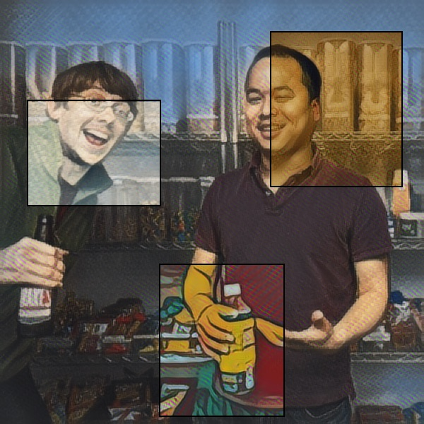

Playing with zooms through size-space (the size of the image on which the style is applied; all sizes are then normalized for the final video):
The "Snake": transition between styles at smallest size, then at the largest size:
Short:
Long:
Transition between styles at same size:
Short:
With a little bit of "size wiggle" between images:
Long: